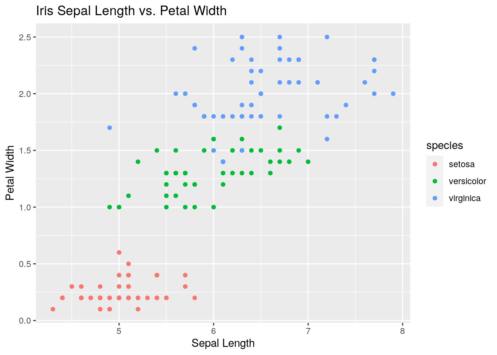
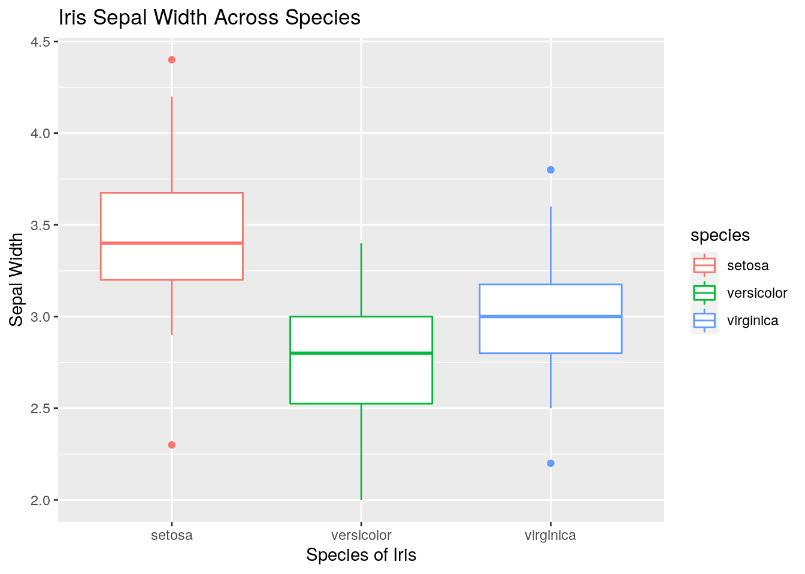

This is my second blog post on this project. It demonstrates the reticulate function that allows R and python to talk to each other and communicate across code chunks. I use the reticulate function on some data from my projects!
library(reticulate)
library(readr)
library(tidyverse)## ── Attaching packages ──────────────────────────────────────────────────────────────────────── tidyverse 1.3.0 ──## ✓ ggplot2 3.3.2 ✓ dplyr 1.0.1
## ✓ tibble 3.0.3 ✓ stringr 1.4.0
## ✓ tidyr 1.1.1 ✓ forcats 0.5.0
## ✓ purrr 0.3.4## ── Conflicts ─────────────────────────────────────────────────────────────────────────── tidyverse_conflicts() ──
## x dplyr::filter() masks stats::filter()
## x dplyr::lag() masks stats::lag()library(dplyr)
library(ggplot2)
raptor <- read_csv("raptordata_positions.csv")## Warning: Missing column names filled in: 'X1' [1]## Parsed with column specification:
## cols(
## X1 = col_double(),
## player = col_character(),
## team = col_character(),
## position = col_character(),
## minutes = col_number(),
## boxraptor_off = col_double(),
## boxraptor_def = col_double(),
## boxraptor_total = col_double(),
## onoffraptor_off = col_double(),
## onoffraptor_def = col_double(),
## onoffraptor_total = col_double(),
## offensiveraptor = col_double(),
## defensiveraptor = col_double(),
## totalraptor = col_double(),
## war = col_double()
## )head(raptor)## # A tibble: 6 x 15
## X1 player team position minutes boxraptor_off boxraptor_def
## <dbl> <chr> <chr> <chr> <dbl> <dbl> <dbl>
## 1 1 James… Rock… SG 2931 9.5 1.2
## 2 2 Kawhi… Clip… SF 2359 6.3 3.2
## 3 3 Giann… Bucks PF 2194 5.6 2.6
## 4 4 LeBro… Lake… SF 3078 6.6 0.2
## 5 5 Antho… Lake… PF 2900 3.9 4.7
## 6 6 Karl-… Timb… C 1187 4.9 2.3
## # … with 8 more variables: boxraptor_total <dbl>, onoffraptor_off <dbl>,
## # onoffraptor_def <dbl>, onoffraptor_total <dbl>, offensiveraptor <dbl>,
## # defensiveraptor <dbl>, totalraptor <dbl>, war <dbl>import numpy as np
import pandas as pd
r.raptor.head()## X1 player team position minutes boxraptor_off \
## 0 1.0 James Harden Rockets SG 2931.0 9.5
## 1 2.0 Kawhi Leonard Clippers SF 2359.0 6.3
## 2 3.0 Giannis Antetokounmpo Bucks PF 2194.0 5.6
## 3 4.0 LeBron James Lakers SF 3078.0 6.6
## 4 5.0 Anthony Davis Lakers PF 2900.0 3.9
##
## boxraptor_def boxraptor_total onoffraptor_off onoffraptor_def \
## 0 1.2 10.8 1.6 4.6
## 1 3.2 9.5 5.4 2.7
## 2 2.6 8.2 2.9 6.2
## 3 0.2 6.9 4.4 5.7
## 4 4.7 8.5 -0.8 2.2
##
## onoffraptor_total offensiveraptor defensiveraptor totalraptor war
## 0 6.2 8.5 2.0 10.5 19.8
## 1 8.1 6.4 3.3 9.6 14.9
## 2 9.1 5.3 3.4 8.8 13.1
## 3 10.1 6.5 1.3 7.8 16.8
## 4 1.4 3.1 4.3 7.4 15.5np.mean(r.raptor.totalraptor)## 0.32200000000000001np.mean(r.raptor[r.raptor.minutes>2200].war)## 6.7380000000000004np.std(r.raptor[r.raptor.minutes>2200].totalraptor)
#import matplotlib.pyplot as plt
#x=np.mean(r.raptor.offensiveraptor)
#y=np.mean(r.raptor.defensiveraptor)
#plt.scatter(x,y, color="red", alpha=.5)
#plt.xlabel('Offensive Raptor (points)')
#plt.ylabel('Defensive Raptor (points)')
#plt.title('Offensive Raptor vs. Defensive Raptor for NBA Players')
#plt.show()## 2.8626288617283242import seaborn as sns
iris = sns.load_dataset('iris')
iris.to_csv("iris.csv")
iris.head()## sepal_length sepal_width petal_length petal_width species
## 0 5.1 3.5 1.4 0.2 setosa
## 1 4.9 3.0 1.4 0.2 setosa
## 2 4.7 3.2 1.3 0.2 setosa
## 3 4.6 3.1 1.5 0.2 setosa
## 4 5.0 3.6 1.4 0.2 setosatype(iris)## <class 'pandas.core.frame.DataFrame'>np.mean(iris.sepal_length)## 5.8433333333333337head(py$iris)## sepal_length sepal_width petal_length petal_width species
## 1 5.1 3.5 1.4 0.2 setosa
## 2 4.9 3.0 1.4 0.2 setosa
## 3 4.7 3.2 1.3 0.2 setosa
## 4 4.6 3.1 1.5 0.2 setosa
## 5 5.0 3.6 1.4 0.2 setosa
## 6 5.4 3.9 1.7 0.4 setosapy$iris %>% group_by(species) %>% summarize_all(n_distinct)## # A tibble: 3 x 5
## species sepal_length sepal_width petal_length petal_width
## <chr> <int> <int> <int> <int>
## 1 setosa 15 16 9 6
## 2 versicolor 21 14 19 9
## 3 virginica 21 13 20 12py$iris %>% filter(species=="setosa") %>% summarize_if(is.numeric,mean) ## sepal_length sepal_width petal_length petal_width
## 1 5.006 3.428 1.462 0.246py$iris %>% ggplot(aes(x=sepal_length,y=petal_width,color=species)) + geom_point() + ggtitle("Iris Sepal Length vs. Petal Width") + xlab("Sepal Length") + ylab("Petal Width")
py$iris %>% ggplot(aes(x=species,y=sepal_width,color=species)) + geom_boxplot() + ggtitle("Iris Sepal Width Across Species") + xlab("Species of Iris") + ylab("Sepal Width")
Here is a picture I took freshman year from my dorm room of the beautiful Austin sunset!